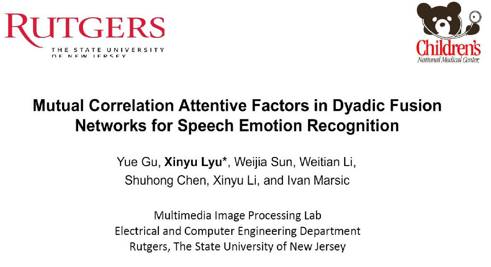

Thank you for your interests in our works
2020


Topic:3D Self-Attention for Unsupervised Video Quantization
Date:April 30, 2020

Topic:Monocular 3D Face Reconstruction
Date:April 30, 2020

Topic:Adversarial Attack Based On Disrupting Image Feature
Date:April 24, 2020

Topic:Pose-guided Occluded Person Re-ID
Date:April 24, 2020
2019



[PPT]Speaker:Xinyu Lyu
Topic: Mutual Correlation Attentive Factors in Dyadic Fusion Networks for Speech Emotion Recognition
Date:October 18, 2019

Speaker: Yuyu Guo
Topic: Adaptive Multi-Path Aggregation for Human DensePose Estimation in the Wild
Date:October 18, 2019
[PPT]
Speaker:Xiangpeng Li
Topic: Learnable Aggregating Net with Diversity Learning for Video Question Answering
Date:October 18, 2019
Speaker:Xiangpeng Li
Topic: Learnable Aggregating Net with Diversity Learning for Video Question Answering
Date:October 18, 2019